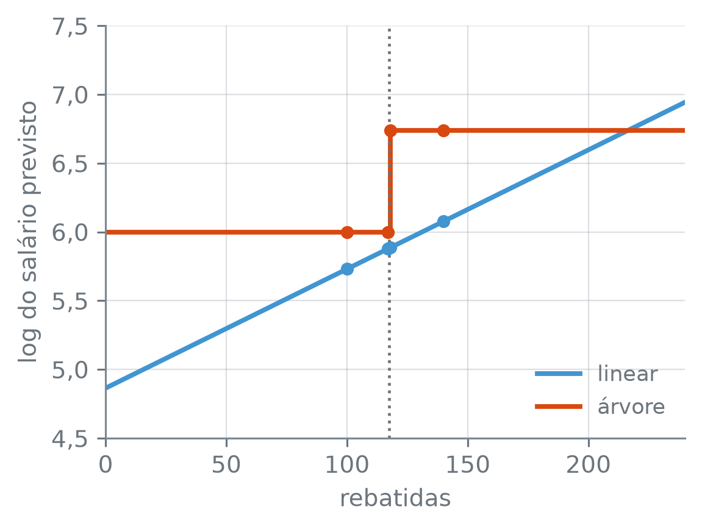

def numero_br(valor, casas=2):
texto = f"{valor:,.{casas}f}"
texto = texto.replace(",", "_").replace(".", ",").replace("_", ".")
return texto.replace("-", "−")Árvores contra Modelos Lineares
Nota
Esta seção corresponde à seção 8.1.3 de James et al. (2023).
Um jogador de beisebol com 6 anos de liga faz uma rebatida a mais na temporada. Quanto muda o salário que um modelo prevê para ele? A regressão linear dá sempre a mesma resposta, qualquer que seja o número de rebatidas que ele já tinha. A árvore de regressão responde “nada” quase sempre e “um salto” quando a rebatida a mais faz o jogador atravessar um corte. As duas respostas vêm de duas suposições opostas sobre a forma da função que leva os preditores à resposta. Qual das duas formas descreve melhor um conjunto de dados?
Os números saem com vírgula decimal e ponto de milhar:
As duas formas nos mesmos jogadores
Os jogadores de Hitters com salário registrado, o logaritmo do salário como resposta e as duas colunas da seção 12.1, anos e rebatidas, bastam para ver as duas formas lado a lado. Primeiro, a regressão linear:
import numpy as np
import pandas as pd
from sklearn.linear_model import LinearRegression
hitters = pd.read_csv("dados/Hitters.csv").dropna()
y = np.log(hitters["salario"])
X2 = hitters[["anos", "rebatidas"]]
linear = LinearRegression()
linear.fit(X2, y)
print("β0:", numero_br(linear.intercept_, 3))
print("β de anos:", numero_br(linear.coef_[0], 4))
print("β de rebatidas:", numero_br(linear.coef_[1], 4))β0: 4,275
β de anos: 0,0982
β de rebatidas: 0,0087LinearRegression() — a regressão linear por mínimos quadrados. Depois do fit, linear.intercept_ guarda \(\hat\beta_0\), e linear.coef_, os \(\hat\beta_j\), na ordem das colunas: coef_[0] é o de anos, e coef_[1], o de rebatidas.
Depois, a árvore de três folhas da seção 12.1, com o corte da pergunta sobre rebatidas:
from sklearn.tree import DecisionTreeRegressor
arvore = DecisionTreeRegressor(max_leaf_nodes=3, random_state=12)
arvore.fit(X2, y)
pergunta_rebatidas = arvore.tree_.feature == 1 # a coluna 1 de X2 é rebatidas
corte_rebatidas = arvore.tree_.threshold[pergunta_rebatidas][0]
print("corte em rebatidas:", numero_br(corte_rebatidas, 1))corte em rebatidas: 117,5As duas formas respondem de jeitos diferentes a uma mudança num preditor só. Para um jogador com 6 anos de liga, o que acontece com a previsão quando as rebatidas passam de 100 para 117, depois para 118 e depois para 140? Tente prever, para cada modelo, quais dos três passos mudam a previsão.
novos = pd.DataFrame({"anos": 6, "rebatidas": [100, 117, 118, 140]})
previsoes = novos.assign(linear=linear.predict(novos),
árvore=arvore.predict(novos))
previsoes["passo da linear"] = previsoes["linear"].diff()
previsoes["passo da árvore"] = previsoes["árvore"].diff()
(previsoes.drop(columns="anos").style.hide(axis="index")
.format(precision=4, decimal=",", na_rep=""))| rebatidas | linear | árvore | passo da linear | passo da árvore |
|---|---|---|---|---|
| 100 | 5,7306 | 5,9984 | ||
| 117 | 5,8779 | 5,9984 | 0,1473 | 0,0000 |
| 118 | 5,8866 | 6,7397 | 0,0087 | 0,7413 |
| 140 | 6,0772 | 6,7397 | 0,1906 | 0,0000 |
No pd.DataFrame, um valor solto, como o 6, é repetido em todas as linhas. df.assign(nome=valores) — uma cópia da tabela com as colunas novas. As colunas de passo são o diff da seção 12.1: quanto a previsão muda de uma linha para a seguinte.
Na regressão linear, cada rebatida a mais soma o \(\hat\beta\) de rebatidas, 0,0087, ao logaritmo do salário, seja qual for o número de rebatidas e o de anos. Os três passos da linear, 0,1473, 0,0087 e 0,1906, são proporcionais às 17, 1 e 22 rebatidas acrescentadas. Na árvore, as 17 rebatidas de 100 a 117 não mudam nada, e a 118.ª soma 0,7413 de uma vez, porque o jogador atravessa o corte de 117,5 e passa de \(R_2\) para \(R_3\). De 118 a 140, a previsão fica parada de novo. A figura mostra as duas previsões para todas as contagens de rebatidas, com os anos fixos em 6:
import matplotlib.pyplot as plt
def virgula(valor, posicao):
return f"{valor:.1f}".replace(".", ",")
grade_reb = pd.DataFrame({"anos": 6, "rebatidas": np.arange(0, 241)})
fig, ax = plt.subplots(figsize=(4.2, 3.2))
ax.plot(grade_reb["rebatidas"], linear.predict(grade_reb), color="C0",
label="linear")
ax.step(grade_reb["rebatidas"], arvore.predict(grade_reb), where="post",
color="C1", label="árvore")
ax.scatter(previsoes["rebatidas"], previsoes["linear"], color="C0", s=20,
zorder=3)
ax.scatter(previsoes["rebatidas"], previsoes["árvore"], color="C1", s=20,
zorder=3)
ax.axvline(corte_rebatidas, color="0.45", linestyle=":", linewidth=1.2)
ax.set_xlim(0, 240)
ax.set_xlabel("rebatidas")
ax.set_ylabel("log do salário previsto")
ax.yaxis.set_major_formatter(virgula)
ax.legend(loc="lower right")
plt.tight_layout()
plt.show()
np.arange(a, b) — os inteiros de a até b - 1; aqui, as 241 contagens de rebatidas de 0 a 240.
A reta e a escada são as duas formas de \(f\), a função que leva \(X_1, \dots, X_p\) a \(Y\). Na regressão linear, cada preditor soma a \(f\) um efeito que não depende dos outros:
\[ f(X) = \beta_0 + \sum_{j=1}^{p} X_j \beta_j. \tag{8.8} \]
Na árvore, \(f\) é constante dentro de cada caixa:
\[ f(X) = \sum_{m=1}^{M} c_m\, 1(X \in R_m), \tag{8.9} \]
em que \(R_1, \dots, R_M\) são as regiões retangulares das folhas, as mesmas da seção 12.1, lá contadas por \(J\) e aqui por \(M\): não se sobrepõem e cobrem o espaço dos preditores inteiro. O indicador \(1(X \in R_m)\) vale 1 quando \(X\) cai em \(R_m\) e 0 quando não cai. Para cada \(X\), só um dos indicadores vale 1, e \(f(X)\) é o \(c_m\) da região em que \(X\) cai: na árvore de regressão, a média \(\hat y_{R_m}\) da resposta dos dados de treino daquela folha.
A célula abaixo faz a soma (8.9) para cada jogador, com as médias das folhas no lugar de \(c_m\), e põe o resultado, folha a folha, ao lado das previsões da árvore:
folha = arvore.apply(X2)
medias_das_folhas = y.groupby(folha).mean()
soma = np.zeros(len(X2))
for m in medias_das_folhas.index:
soma = soma + medias_das_folhas[m] * (folha == m)
por_jogador = pd.DataFrame({"folha": folha, "(8.9)": soma,
"arvore.predict": arvore.predict(X2)})
por_folha = por_jogador.groupby("folha").mean()
por_folha.insert(0, "jogadores", por_jogador.groupby("folha").size())
por_folha.index = ["R1", "R2", "R3"]
por_folha.style.format(precision=3, decimal=",")| jogadores | (8.9) | arvore.predict | |
|---|---|---|---|
| R1 | 90 | 5,107 | 5,107 |
| R2 | 90 | 5,998 | 5,998 |
| R3 | 83 | 6,740 | 6,740 |
folha == m — um vetor de True e False, com True nos jogadores da folha m: é o \(1(X \in R_m)\) de (8.9), que na conta vale 1 e 0. np.zeros(n) — um array de n zeros, de onde a soma parte. df.groupby("folha").size() — o número de linhas de cada grupo.
Os três \(c_m\), na coluna (8.9), são as médias das folhas \(R_1\), \(R_2\) e \(R_3\) da seção 12.1, e a coluna ao lado, as previsões da árvore, tem os mesmos três números.
Se a relação entre os preditores e a resposta for próxima de uma soma de efeitos, como (8.8), a regressão linear aproveita essa estrutura, e a árvore, que só consegue imitá-la com muitos degraus, sai perdendo. Se a relação tiver limiares e interações, como (8.9), a árvore pode ganhar. Nenhuma das duas é melhor em geral, e quem decide, num conjunto de dados, é a estimativa do erro de teste.
Duas fronteiras
Na classificação, o papel de (8.8) é da regressão logística: com duas classes, ela prevê a classe 1 quando a probabilidade estimada passa de 0,5, isto é, quando \(\hat\beta_0 + \hat\beta_1 X_1 + \hat\beta_2 X_2 > 0\), e a fronteira entre as duas classes é a reta \(\hat\beta_0 + \hat\beta_1 X_1 + \hat\beta_2 X_2 = 0\). A árvore de classificação divide o plano em caixas, e a fronteira dela é feita de segmentos paralelos aos eixos. Para ver o que cada uma faz com uma fronteira que não é a sua, a célula abaixo sorteia 200 pontos de treino e 10.000 de teste no quadrado \([-2, 2] \times [-2, 2]\) e dá a eles duas classificações verdadeiras:
- reta: classe 1 quando \(X_1 + X_2 > 0\), uma fronteira diagonal;
- degraus: classe 1 quando \(X_1 < -0{,}5\) ou \(X_2 > 0{,}5\), uma fronteira em L, com um segmento vertical e um horizontal.
Em cada classificação, cerca de 10% dos rótulos, sorteados, trocam de classe: é o ruído, que nenhum modelo prevê.
rng = np.random.default_rng(12)
X = rng.uniform(-2, 2, size=(200, 2))
X_teste = rng.uniform(-2, 2, size=(10_000, 2))
troca = rng.random(200) < 0.1
troca_teste = rng.random(10_000) < 0.1
def reta(Z):
return (Z[:, 0] + Z[:, 1] > 0).astype(int)
def degraus(Z):
return ((Z[:, 0] < -0.5) | (Z[:, 1] > 0.5)).astype(int)
rotulos = {
"reta": {"treino": reta(X) ^ troca,
"teste": reta(X_teste) ^ troca_teste},
"degraus": {"treino": degraus(X) ^ troca,
"teste": degraus(X_teste) ^ troca_teste},
}
print("trocados no treino:", troca.sum(), "de 200")
print("fração trocada no teste:", numero_br(troca_teste.mean(), 4))trocados no treino: 19 de 200
fração trocada no teste: 0,0991np.random.default_rng(semente) — um gerador de números aleatórios do numpy, com a semente dada. rng.uniform(a, b, size) — sorteios uniformes entre a e b, no formato size; aqui, 200 linhas de duas colunas. rng.random(n) — n sorteios uniformes entre 0 e 1; < 0.1 marca, em média, um em cada dez.
(condicao).astype(int) — converte True e False em 1 e 0. a ^ b — o “ou exclusivo”: vale 1 quando só um dos dois vale 1. Com troca, inverte a classe exatamente nos pontos sorteados. Em rotulos, cada fronteira guarda as classes do treino e as do teste, com esses nomes.
Um classificador que conhecesse a fronteira verdadeira erraria exatamente os pontos trocados: é o classificador de Bayes da seção 7.7, e a fração trocada no teste, 0,0991, é o erro dele nestes 10.000 pontos. Esse erro é a referência contra a qual os modelos se medem. As trocas são o erro irredutível desta classificação: nenhum modelo tem como prever o sorteio, e, a não ser por acaso num conjunto de teste finito, nenhum erra menos que o classificador de Bayes.
Primeiro, um caso por extenso: a fronteira reta e a regressão logística, sem penalização. O fit usa os 200 pontos de treino, o predict classifica os 10.000 de teste, e o erro de teste é a fração de previsões erradas. A validação cruzada estratificada em 10 grupos estima o mesmo erro só com os pontos de treino:
from sklearn.linear_model import LogisticRegression
from sklearn.model_selection import StratifiedKFold, cross_val_score
y_treino = rotulos["reta"]["treino"]
y_teste = rotulos["reta"]["teste"]
logistica = LogisticRegression(C=np.inf, solver="newton-cholesky", tol=1e-8)
logistica.fit(X, y_treino)
previsto = logistica.predict(X_teste)
erro_teste = np.mean(previsto != y_teste)
print("erro de teste da logística:", numero_br(erro_teste, 4))
grupos = StratifiedKFold(10, shuffle=True, random_state=12)
acertos = cross_val_score(logistica, X, y_treino, cv=grupos)
print("erro de validação cruzada da logística:", numero_br(1 - acertos.mean(), 4))erro de teste da logística: 0,1226
erro de validação cruzada da logística: 0,1250LogisticRegression(C, solver, tol) — a regressão logística. C=np.inf a ajusta sem penalização; solver="newton-cholesky" e tol=1e-8 são o método de otimização e a tolerância para parar, que levam ao mesmo resultado em qualquer máquina.
np.mean(previsto != y_teste) — a comparação marca com True cada ponto em que a previsão erra, e a média dos True é a fração de erros.
cross_val_score(estimador, X, y, cv) — ajusta e avalia o estimador em cada grupo de cv e devolve uma pontuação por grupo; num classificador, a pontuação padrão é a acurácia, e 1 menos a média dela é o erro de validação cruzada.
A logística erra 0,1226 no teste, e a validação cruzada, só com o treino, estimava 0,1250. A árvore, nos mesmos pontos, é podada como na seção 12.3: cresce sem limite, o caminho de poda dá os ccp_alpha, a grade fica com um ponto dentro de cada intervalo do caminho, em ordem decrescente, e o GridSearchCV escolhe o ccp_alpha pelo erro de validação cruzada, nos mesmos 10 grupos. A árvore escolhida, reajustada com os 200 pontos, classifica o teste:
from sklearn.model_selection import GridSearchCV
from sklearn.tree import DecisionTreeClassifier
grande = DecisionTreeClassifier(random_state=12)
grande.fit(X, y_treino)
alfas = grande.cost_complexity_pruning_path(X, y_treino).ccp_alphas
grade_poda = np.r_[0.0, np.sqrt(alfas[1:-1] * alfas[2:])][::-1]
busca = GridSearchCV(DecisionTreeClassifier(random_state=12),
{"ccp_alpha": grade_poda}, cv=grupos, scoring="accuracy")
busca.fit(X, y_treino)
escolhida = busca.best_estimator_
previsto = escolhida.predict(X_teste)
print("ccp_alpha escolhido:", numero_br(busca.best_params_["ccp_alpha"], 4))
print("folhas da árvore escolhida:", escolhida.get_n_leaves())
print("erro de validação cruzada da árvore:", numero_br(1 - busca.best_score_, 4))
print("erro de teste da árvore:", numero_br(np.mean(previsto != y_teste), 4))ccp_alpha escolhido: 0,0088
folhas da árvore escolhida: 14
erro de validação cruzada da árvore: 0,1300
erro de teste da árvore: 0,2055A validação cruzada fica com uma árvore de 14 folhas, que ela estima errar 0,1300; no teste, essa árvore erra 0,2055. A mesma conta, agora para as duas fronteiras, num laço; a tabela tem uma linha por fronteira e modelo:
modelos = {}
buscas = {}
erros_teste = {}
linhas = []
for nome in ["reta", "degraus"]:
y_treino = rotulos[nome]["treino"]
y_teste = rotulos[nome]["teste"]
logistica = LogisticRegression(C=np.inf, solver="newton-cholesky", tol=1e-8)
logistica.fit(X, y_treino)
acertos = cross_val_score(logistica, X, y_treino, cv=grupos)
erro_log = np.mean(logistica.predict(X_teste) != y_teste)
grande = DecisionTreeClassifier(random_state=12)
grande.fit(X, y_treino)
alfas = grande.cost_complexity_pruning_path(X, y_treino).ccp_alphas
grade_poda = np.r_[0.0, np.sqrt(alfas[1:-1] * alfas[2:])][::-1]
busca = GridSearchCV(DecisionTreeClassifier(random_state=12),
{"ccp_alpha": grade_poda}, cv=grupos, scoring="accuracy")
busca.fit(X, y_treino)
escolhida = busca.best_estimator_
erro_arv = np.mean(escolhida.predict(X_teste) != y_teste)
modelos[nome] = {"logística": logistica, "árvore": escolhida}
buscas[nome] = busca
erros_teste[nome] = {"logística": erro_log, "árvore": erro_arv}
linhas.append({"fronteira": nome, "modelo": "logística", "folhas": np.nan,
"CV": 1 - acertos.mean(), "teste": erro_log})
linhas.append({"fronteira": nome, "modelo": "árvore",
"folhas": escolhida.get_n_leaves(),
"CV": 1 - busca.best_score_, "teste": erro_arv})
(pd.DataFrame(linhas).style.hide(axis="index")
.format(precision=4, decimal=",")
.format(precision=0, subset=["folhas"], na_rep=""))| fronteira | modelo | folhas | CV | teste |
|---|---|---|---|---|
| reta | logística | 0,1250 | 0,1226 | |
| reta | árvore | 14 | 0,1300 | 0,2055 |
| degraus | logística | 0,1900 | 0,2011 | |
| degraus | árvore | 3 | 0,0950 | 0,1043 |
Antes da figura: a fronteira da árvore só tem segmentos horizontais e verticais. Como ela desenha a diagonal \(X_1 + X_2 = 0\)? E como a logística, que só desenha retas, desenha o L?
eixo = np.linspace(-2, 2, 200)
m1, m2 = np.meshgrid(eixo, eixo)
malha = np.column_stack([m1.ravel(), m2.ravel()])
verdadeira = {"reta": {"x": [-2, 2], "y": [2, -2]},
"degraus": {"x": [-0.5, -0.5, 2], "y": [-2, 0.5, 0.5]}}
fig, eixos = plt.subplots(2, 2, figsize=(3.6, 4.2), sharex=True,
sharey=True)
for linha, nome in zip(eixos, ["reta", "degraus"]):
y_treino = rotulos[nome]["treino"]
for ax, (tipo, modelo) in zip(linha, modelos[nome].items()):
z = modelo.predict(malha).reshape(m1.shape)
ax.contourf(m1, m2, z, levels=[-0.5, 0.5, 1.5],
colors=["C0", "C1"], alpha=0.3)
for classe, cor in [(0, "C0"), (1, "C1")]:
da_classe = y_treino == classe
ax.scatter(X[da_classe, 0], X[da_classe, 1], s=5, color=cor,
linewidths=0)
ax.plot(verdadeira[nome]["x"], verdadeira[nome]["y"], color="0.45",
linestyle="--", linewidth=1.5)
erro = erros_teste[nome][tipo]
ax.set_title(f"{tipo}\nteste {numero_br(erro, 4)}", fontsize=8)
ax.set_aspect("equal")
ax.set_xlim(-2, 2)
ax.set_ylim(-2, 2)
ax.set_xticks([-1, 0, 1])
ax.set_yticks([-1, 0, 1])
linha[0].set_ylabel(f"{nome}\n$X_2$")
for ax in eixos[1]:
ax.set_xlabel("$X_1$")
plt.tight_layout()
plt.show()![Quatro quadrados em duas linhas e duas colunas, com X1 de −2 a 2 no eixo horizontal e X2 de −2 a 2 no vertical. Linha de cima, fronteira verdadeira diagonal tracejada: à esquerda, a logística separa o azul, embaixo à esquerda, do laranja, em cima à direita, por uma reta quase sobre a diagonal, com erro de teste 0,1226; à direita, a árvore segue a diagonal com uma escada de degraus horizontais e verticais, com erro 0,2055. Linha de baixo, fronteira verdadeira em L tracejada, com a região azul no canto de baixo à direita: à esquerda, a logística corta o quadrado por uma reta inclinada que não acompanha o L, com erro 0,2011; à direita, a árvore desenha o L com um corte vertical e um horizontal quase sobre os tracejados, com erro 0,1043.](04-arvores-contra-modelos-lineares_files/figure-html/fig-fronteiras-output-1.png)
np.meshgrid(x, y) — as duas coordenadas de uma malha: cada ponto da grade 200 × 200 recebe o seu \(X_1\) em m1 e o seu \(X_2\) em m2. m1.ravel() — a matriz achatada numa fila só, para o np.column_stack montar as duas colunas que os modelos esperam; .reshape(m1.shape) faz o caminho de volta, com as previsões.
ax.contourf(x, y, z, levels, colors, alpha) — pinta as regiões da malha pelo valor de z: com levels=[-0.5, 0.5, 1.5], o que vale 0 recebe a primeira cor, e o que vale 1, a segunda. X[da_classe, 0] — a primeira coluna de X, só nas linhas em que a máscara vale True: os pontos de treino de uma classe, desenhados com a cor dela. ax.set_aspect("equal") — a mesma escala nos dois eixos, para a diagonal sair a 45°. ax.set_xticks — as posições das marcas do eixo horizontal, como o set_yticks no vertical.
Na reta, a logística tem a forma certa: a fronteira dela quase coincide com a tracejada, e o erro de teste, 0,1226, fica a 0,0235 do erro do classificador de Bayes nestes pontos, 0,0991. A árvore, com 14 folhas, só consegue imitar a diagonal com uma escada, e cada degrau deixa de um lado ou do outro uma fatia do plano com a classe errada; com 200 pontos, a escada é grosseira, e o erro de teste sobe a 0,2055. No L, os papéis se invertem: a logística não tem como dobrar a reta e corta o L em diagonal, com erro de 0,2011, enquanto a árvore acha os dois cortes com 3 folhas e erra 0,1043, a 0,0052 do erro do classificador de Bayes.
Na reta, a árvore escolhida tem erro de validação cruzada de 0,1300 e erro de teste de 0,2055. Pela validação cruzada, ela quase empataria com a logística, que tem 0,1250; pelo teste, erra 0,0829 a mais. De onde vem a distância entre 0,1300 e 0,2055? A célula abaixo mede o erro de validação cruzada e o de teste de cada árvore do caminho de poda, e não só da escolhida, uma linha por árvore:
busca = buscas["reta"]
y_treino = rotulos["reta"]["treino"]
y_teste = rotulos["reta"]["teste"]
alfas_da_grade = np.array(busca.cv_results_["param_ccp_alpha"], dtype=float)
erros_cv = 1 - busca.cv_results_["mean_test_score"]
linhas = []
for alfa, erro_cv in zip(alfas_da_grade, erros_cv):
podada = DecisionTreeClassifier(ccp_alpha=alfa, random_state=12)
podada.fit(X, y_treino)
erro_teste = np.mean(podada.predict(X_teste) != y_teste)
linhas.append({"ccp_alpha": alfa, "folhas": podada.get_n_leaves(),
"CV": erro_cv, "teste": erro_teste,
"teste − CV": erro_teste - erro_cv})
caminho = pd.DataFrame(linhas)
print("árvores no caminho:", len(caminho))
(caminho.style.hide(axis="index")
.format(precision=4, decimal=",")
.format(precision=5, subset=["ccp_alpha"], decimal=","))árvores no caminho: 17| ccp_alpha | folhas | CV | teste | teste − CV |
|---|---|---|---|---|
| 0,12416 | 2 | 0,2950 | 0,3482 | 0,0532 |
| 0,05587 | 3 | 0,1600 | 0,2536 | 0,0936 |
| 0,02289 | 4 | 0,1700 | 0,2434 | 0,0734 |
| 0,01767 | 7 | 0,1800 | 0,2016 | 0,0216 |
| 0,01601 | 8 | 0,1800 | 0,2060 | 0,0260 |
| 0,01487 | 9 | 0,1800 | 0,1980 | 0,0180 |
| 0,01380 | 10 | 0,1650 | 0,1925 | 0,0275 |
| 0,01137 | 11 | 0,1450 | 0,1910 | 0,0460 |
| 0,00954 | 13 | 0,1350 | 0,1970 | 0,0620 |
| 0,00881 | 14 | 0,1300 | 0,2055 | 0,0755 |
| 0,00701 | 15 | 0,1400 | 0,2084 | 0,0684 |
| 0,00539 | 18 | 0,1450 | 0,1952 | 0,0502 |
| 0,00487 | 20 | 0,1550 | 0,2006 | 0,0456 |
| 0,00483 | 22 | 0,1600 | 0,2058 | 0,0458 |
| 0,00479 | 24 | 0,1600 | 0,2124 | 0,0524 |
| 0,00460 | 26 | 0,1600 | 0,2130 | 0,0530 |
| 0,00000 | 28 | 0,1600 | 0,2163 | 0,0563 |
busca.cv_results_["param_ccp_alpha"] — os ccp_alpha da grade, na ordem em que a busca os testou, alinhados com mean_test_score, a acurácia média de validação cruzada de cada um.
Nesta amostra, a coluna teste − CV é positiva nas 17 linhas: a validação cruzada fica abaixo do teste em todas as árvores do caminho, inclusive na última, a árvore sem poda, com ccp_alpha zero, que não foi escolhida por critério nenhum: 0,1600 contra 0,2163, uma distância de 0,0563. Na árvore escolhida, a de 14 folhas, a distância entre 0,1300 e 0,2055 é de 0,0755. As duas distâncias são de árvores diferentes e não se somam nem se subtraem, mas a da árvore sem poda, que nenhuma escolha tocou, indica de onde deve vir boa parte da outra: do sorteio dos 200 pontos de treino. Com esses 200 pontos, a validação cruzada subestima o erro de todas as árvores do caminho, escolhida ou não, e com outro sorteio a distância poderia ser menor ou ir para o outro lado.
A outra causa é o otimismo do mínimo, visto na seção 12.2: entre todas as árvores do caminho, a escolhida é a de menor erro de validação cruzada, e esse erro, 0,1300, fica 0,0300 abaixo dos 0,1600 da árvore sem poda. Parte dessa diferença é sorte da escolha, e o erro do escolhido tende a sair menor do que ele de fato é. Da primeira causa não há como fugir com 200 pontos; a segunda se remove medindo o erro em pontos que não participaram da escolha do ccp_alpha.
Em dados reais
Num conjunto de dados real, não há 10.000 pontos de teste guardados, e a comparação se faz por validação cruzada. Uma árvore podada tem um passo que aprende com o dado, a escolha do ccp_alpha, e esse passo precisa ser refeito dentro de cada grupo: como na seção 10.6, toda etapa que aprende do dado entra no cross_val_score, e como na seção 11.2, a busca é repetida no treino de cada grupo. A forma direta de fazer isso é dar ao cross_val_score um GridSearchCV como estimador.
Na validação cruzada aninhada, há duas divisões em grupos, uma dentro da outra. Cada grupo externo fica de fora uma vez. Com as linhas dos outros grupos externos, a busca roda a sua própria validação cruzada, em grupos internos, escolhe o ccp_alpha e reajusta a árvore. A árvore escolhida é então medida no grupo externo que ficou de fora, que não participou da escolha. A média nos grupos externos estima o erro de teste do procedimento inteiro, escolha incluída.
O caminho de poda muda com os dados de cada grupo externo, e a grade de um ponto por intervalo teria de ser recalculada em cada um. Uma grade fixa, larga o bastante para ir da árvore inteira à raiz sozinha, evita isso: zero e 41 valores de \(10^{-4}\) a 1, em ordem decrescente.
Nos jogadores de Hitters, com as 19 colunas e o logaritmo do salário, a árvore podada disputa com a regressão linear, em 10 grupos externos e 5 internos. Com uma busca como estimador, cada ajuste do cross_val_score num grupo externo é uma busca inteira: validação cruzada interna, escolha do ccp_alpha e reajuste com o melhor. O scoring="neg_mean_squared_error" vale para o cross_val_score como para o GridSearchCV: o MSE com o sinal trocado.
from sklearn.model_selection import KFold
X_h = pd.get_dummies(hitters.drop(columns="salario"), drop_first=True,
dtype=float)
grade = np.r_[0.0, np.logspace(-4, 0, 41)][::-1]
externos = KFold(10, shuffle=True, random_state=12)
internos = KFold(5, shuffle=True, random_state=12)
podada = GridSearchCV(DecisionTreeRegressor(random_state=12),
{"ccp_alpha": grade}, cv=internos,
scoring="neg_mean_squared_error")
mse_arvore = -cross_val_score(podada, X_h, y, cv=externos,
scoring="neg_mean_squared_error")
mse_linear = -cross_val_score(LinearRegression(), X_h, y, cv=externos,
scoring="neg_mean_squared_error")
print("colunas:", X_h.shape[1])
raiz = DecisionTreeRegressor(ccp_alpha=grade[0], random_state=12)
raiz.fit(X_h, y)
print("folhas com ccp_alpha = 1:", raiz.get_n_leaves())
print("MSE médio da árvore:", numero_br(mse_arvore.mean(), 4))
print("MSE médio da linear:", numero_br(mse_linear.mean(), 4))
print("grupos com a árvore abaixo da linear:",
(mse_arvore < mse_linear).sum(), "de 10")
por_grupo = pd.DataFrame({"árvore": mse_arvore, "linear": mse_linear},
index=pd.RangeIndex(1, 11, name="grupo externo"))
por_grupo.style.format(precision=4, decimal=",")colunas: 19
folhas com ccp_alpha = 1: 1
MSE médio da árvore: 0,2323
MSE médio da linear: 0,4242
grupos com a árvore abaixo da linear: 10 de 10| árvore | linear | |
|---|---|---|
| grupo externo | ||
| 1 | 0,2386 | 0,3837 |
| 2 | 0,2913 | 0,6432 |
| 3 | 0,2368 | 0,4671 |
| 4 | 0,2362 | 0,3606 |
| 5 | 0,2449 | 0,7109 |
| 6 | 0,1969 | 0,3081 |
| 7 | 0,2691 | 0,4104 |
| 8 | 0,2158 | 0,3172 |
| 9 | 0,1833 | 0,3783 |
| 10 | 0,2104 | 0,2624 |
np.logspace(a, b, n) — n números igualmente espaçados em escala logarítmica, de \(10^a\) a \(10^b\). pd.RangeIndex(1, 11, name) — os rótulos de 1 a 10, com um nome para a coluna do índice.
Com ccp_alpha = 1, a árvore fica com a raiz sozinha, e com zero, não é podada: a grade cobre os dois extremos. Nos jogadores, a árvore podada tem MSE de validação cruzada aninhada de 0,2323, contra 0,4242 da regressão linear com as 19 colunas, e erra menos em cada um dos 10 grupos externos, como a tabela mostra linha a linha. Nestes dados, as caixas se aproximaram mais da relação entre as colunas e o logaritmo do salário do que a soma de efeitos. A regressão linear vai sem penalização; a ridge e o lasso do capítulo 11, que encolhem os coeficientes, seriam outros concorrentes, e a comparação com eles pede a mesma validação cruzada aninhada, com o \(\lambda\) escolhido dentro de cada grupo externo.
Nos pacientes de Heart, a disputa é entre a árvore de classificação e a regressão logística. A árvore usa as indicadoras de todas as categorias, como na seção 12.3; a logística, com intercepto, descarta a primeira categoria de cada coluna de texto, porque sem isso as indicadoras de uma coluna somam 1 em toda linha e repetem o intercepto:
coracao = pd.read_csv("dados/Heart.csv").dropna()
y_c = coracao["doenca_cardiaca"]
medidas = coracao.drop(columns="doenca_cardiaca")
X_arvore = pd.get_dummies(medidas, dtype=float)
X_logistica = pd.get_dummies(medidas, drop_first=True, dtype=float)
print("colunas da árvore:", X_arvore.shape[1])
print("colunas da logística:", X_logistica.shape[1])colunas da árvore: 18
colunas da logística: 16As 18 colunas da árvore viram 16 na logística, uma a menos por coluna de texto. A validação cruzada aninhada usa grupos estratificados, 10 externos e 5 internos, e a mesma grade fixa:
externos = StratifiedKFold(10, shuffle=True, random_state=12)
internos = StratifiedKFold(5, shuffle=True, random_state=12)
podada = GridSearchCV(DecisionTreeClassifier(random_state=12),
{"ccp_alpha": grade}, cv=internos, scoring="accuracy")
logistica = LogisticRegression(C=np.inf, solver="newton-cholesky", tol=1e-8)
erro_arvore = 1 - cross_val_score(podada, X_arvore, y_c, cv=externos)
erro_logistica = 1 - cross_val_score(logistica, X_logistica, y_c, cv=externos)
raiz = DecisionTreeClassifier(ccp_alpha=grade[0], random_state=12)
raiz.fit(X_arvore, y_c)
print("folhas com ccp_alpha = 1:", raiz.get_n_leaves())
print("erro médio da árvore:", numero_br(erro_arvore.mean(), 4))
print("erro médio da logística:", numero_br(erro_logistica.mean(), 4))
menor = []
for erro_arv, erro_log in zip(erro_arvore, erro_logistica):
if np.isclose(erro_arv, erro_log):
menor.append("empate")
elif erro_log < erro_arv:
menor.append("logística")
else:
menor.append("árvore")
por_grupo = pd.DataFrame({"árvore": erro_arvore, "logística": erro_logistica,
"menor erro": menor},
index=pd.RangeIndex(1, 11, name="grupo externo"))
print("grupos por menor erro:")
for rotulo in ["logística", "empate", "árvore"]:
print(f" {rotulo}:", menor.count(rotulo), "de 10")
por_grupo.style.format(precision=4, decimal=",", subset=["árvore", "logística"])folhas com ccp_alpha = 1: 1
erro médio da árvore: 0,2186
erro médio da logística: 0,1683
grupos por menor erro:
logística: 7 de 10
empate: 2 de 10
árvore: 1 de 10| árvore | logística | menor erro | |
|---|---|---|---|
| grupo externo | |||
| 1 | 0,1333 | 0,1667 | árvore |
| 2 | 0,2333 | 0,1333 | logística |
| 3 | 0,2000 | 0,2000 | empate |
| 4 | 0,2667 | 0,2333 | logística |
| 5 | 0,2000 | 0,1333 | logística |
| 6 | 0,3667 | 0,2000 | logística |
| 7 | 0,2000 | 0,1333 | logística |
| 8 | 0,2414 | 0,2069 | logística |
| 9 | 0,2414 | 0,1724 | logística |
| 10 | 0,1034 | 0,1034 | empate |
np.isclose(a, b) — True quando a e b são iguais a menos do arredondamento de ponto flutuante; aqui, o grupo em que os dois erros empatam. lista.count(valor) — quantas vezes o valor aparece na lista.
Nos pacientes, a logística tem o menor erro de validação cruzada aninhada, 0,1683 contra 0,2186 da árvore podada, e erra menos em 7 dos 10 grupos externos, empata em 2 e erra mais em 1. Cada método ganha num dos dois conjuntos: nos jogadores, as caixas de (8.9); nos pacientes, a logística, que é linear no logaritmo da chance, como a regressão de (8.8) é linear na resposta.
O erro de teste também não é o único critério. A árvore podada da seção 12.3, com perguntas sobre o exame de tálio, a dor no peito e os vasos coloridos, cabe numa folha de papel e se explica a quem nunca ouviu falar de uma logística. Quanto de erro vale a pena pagar por essa clareza?
James, Gareth, Daniela Witten, Trevor Hastie, Robert Tibshirani, e Jonathan Taylor. 2023. An Introduction to Statistical Learning with Applications in Python. Springer.